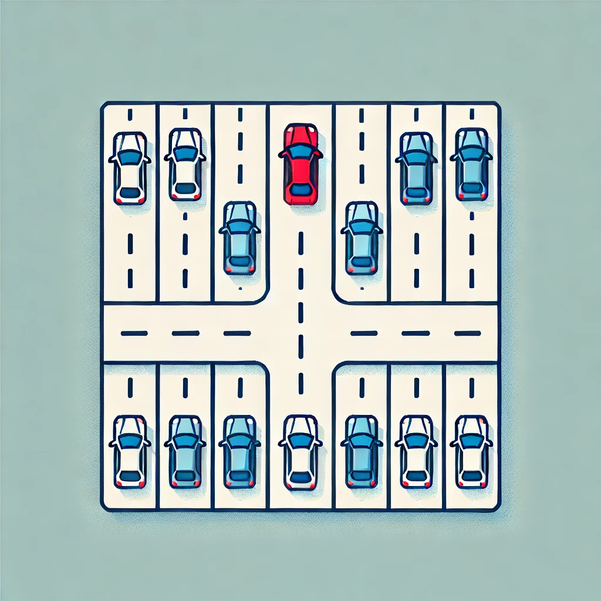

Welcome to Pery Mimon's Self-Driving Car Project
This is my enhanced version of the Self-Driving Car course by Radu Mariescu-Istodor. I've made several performance improvements to enhance both the experience and learning outcomes.
Project Modules
-
World Editor - Design your graph and city environment, including importing data from OpenStreetMap.
-

Training One Car - Train a single car to navigate a linear road.
-
Big City - Train your car in the custom world you've made with the World Editor.
Extras